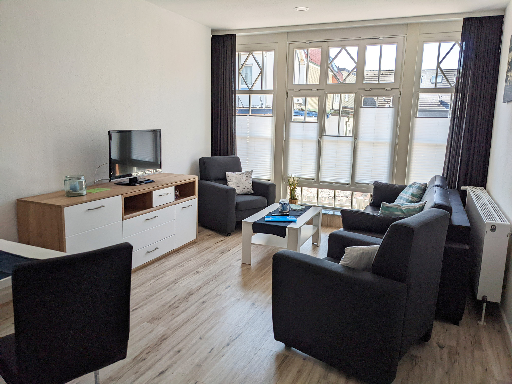
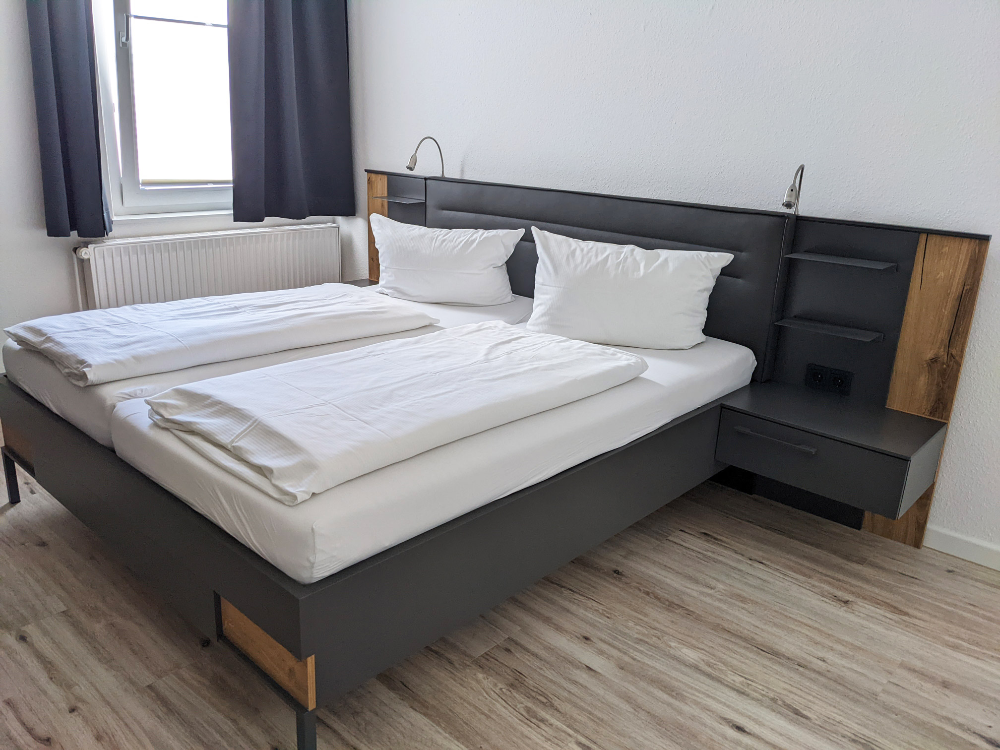
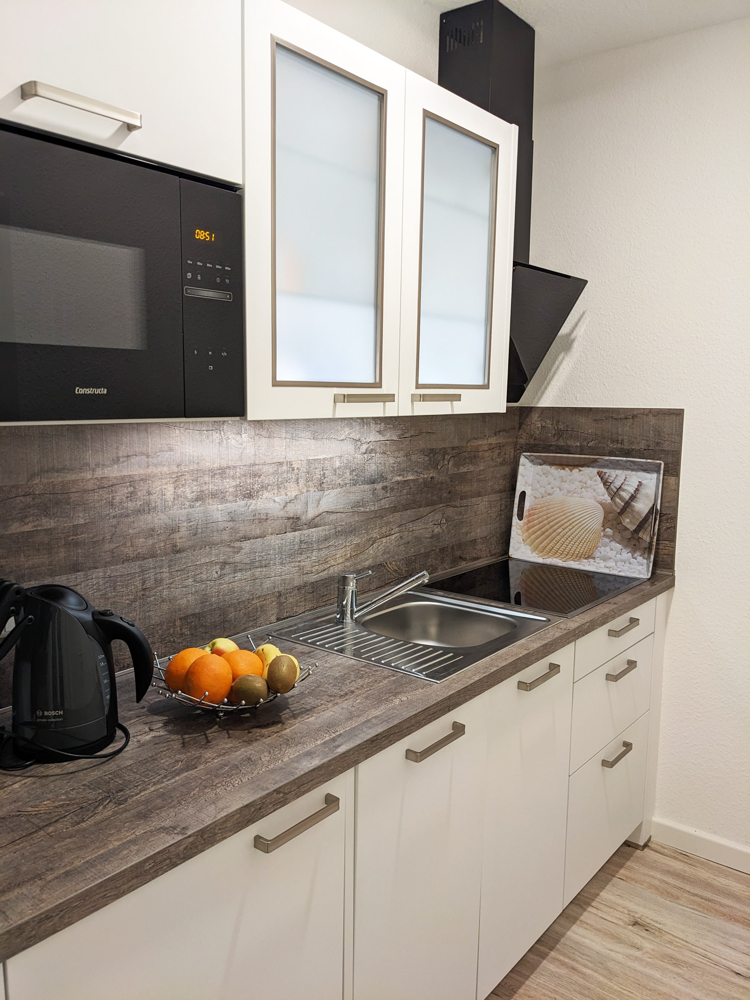
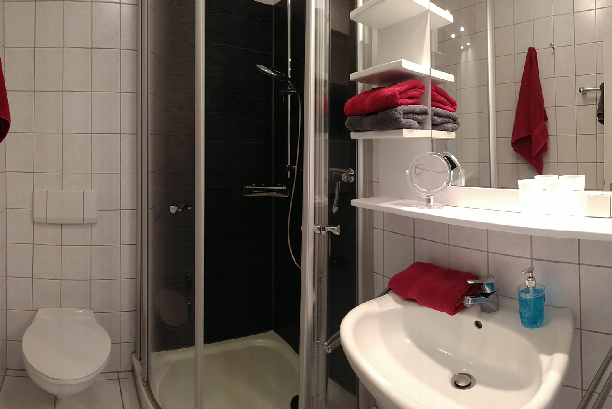
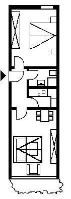

Wohnung 11
Die gemütliche 48 m² große Erdgeschoss-Wohnung wurde 2022 komplett renoviert und mit einem neuen Vinylboden, einer neuen Küche und neuen Möbeln ausgestattet.
Sie bietet Schlafplätze für 4 Personen. Das geräumige Schlafzimmer mit dem 1,80 m breiten Doppelbett bietet ausreichend Platz für ein zusätzliches Kinderbett. Im lichtdurchfluteten Wohn-Esszimmer lässt sich das komfortable Schlafsofa mit einem Handgriff in ein 1,70m breites Doppelbett verwandeln.
| Größe | Bettenanzahl | Hauptsaison | Nebensaison |
|---|---|---|---|
| 48 m² | 4 | 840 € | 525 € |
Hauptsaison: 18.03. - 03.11. und 21.12. - 05.01.
Nebensaison: 05.01. - 17.03. und 04.11. - 20.12.
Alle angegebenen Preise gelten pro Woche für bis zu 2 Erwachsene mit 2 Kindern bis zu 18 Jahren. Weitere Erwachsene zahlen 10 €, zusätzliche Kinder 5 € pro Nacht. Wir bieten Ihnen auf Anfrage außerhalb der Hauptsaison Vermietungen ab 4 Übernachtungen. Treten Sie dafür bitte mit uns in Kontakt.
Mit einer Buchung stimmen Sie unseren Allgemeinen Geschäftsbedingungen zu.
    